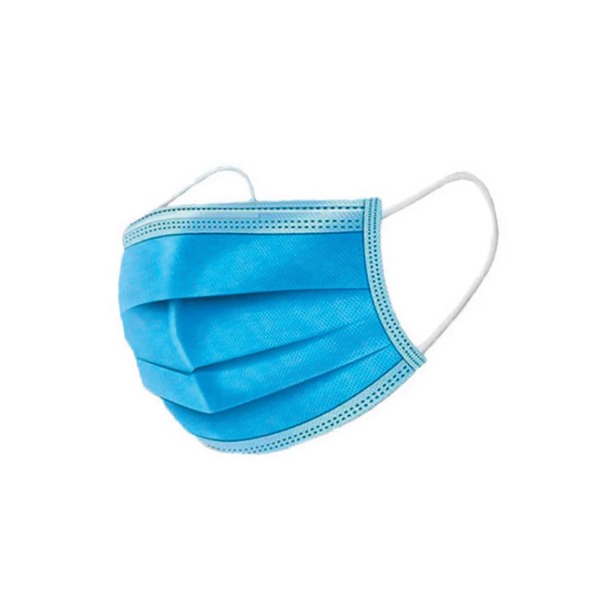

Problem is not people being uneducated
The problem is that people are educated just enough to believe what
they have been taught, and not educated enough to question anything
from what they have been taught.ðŸ§
Richard Feynman
1,343 Tweets

Richard Fenyman @ProfFenyman 23 Mar
- Study Hard
- What others think of you is none of your business
- It's OK not to have all the answers.
- Experiment, Fail, Learn and Repeat
- Knowledge comes from experience
- Imagination is important
- Do what interests you the most
- Stay curious
Richard Fenyman @ProfFenyman 23 Mar
Richard Fenyman @ProfFenyman 23 Mar
Things that Schools should teach:ðŸ§
- Being wrong is not the bad thing.
- It's Okay to question what have you been taught.
- Grades are not as valuable as skills.
- Understanding is more important than memorization.
- Making mistakes is Okay.Learn from your mistakes
Richard Fenyman @ProfFenyman 23 Mar

What's Happening
Covid-19 LIVE
COVID-19 in India

Trending in India
Reha
11.6k Tweets
Entertainment Trending
Avengers
31.8k Tweets
Covid-19 Yesterday
Sachin Tendulkar hospitalised days after Covid-19 diagnosis

India National News . 2 hours ago
Congress shares manippulated video that appears to show PM Modi waving to an empty field,Alt News and Opindia report.
Topics to follow
Physics
Science
Venture Capital
Business & Finance
Machine Learning
Technology
Fintech
business & finance
Mathematics
Field of study
Show more